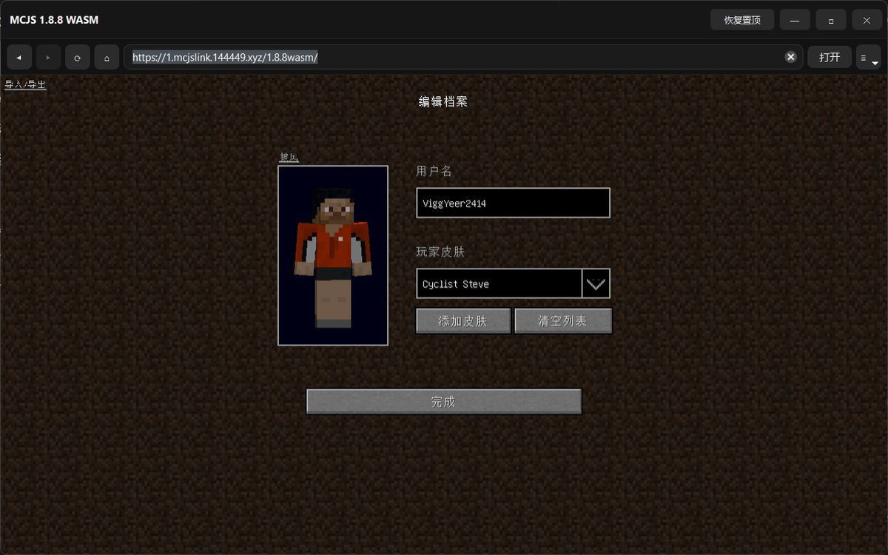

v2.0 · Windows 10 / 11 64 位
青柠浏览器
基于 Edge WebView2 内核，H.264 / AAC 视频直接播；暗色无边框界面、窗口置顶、 崩溃自动恢复。

特点
▶
完整视频解码
Edge WebView2 内核自带 H.264 / AAC，抖音、B 站这类站点也能直接播放，不再黑屏。
◐
暗色无边框界面
圆角窗口、可拖拽标题栏、深浅一致的暗色配色，标题栏和地址栏不再有白边。
📌
默认置顶
每次启动自动保持在最前，不抢输入焦点；随时可一键取消置顶。
🛡
误关 / 崩溃守护
独立守护进程：崩溃或被关掉会自动拉起；正常关闭则一起退出。
🗂
页面日志落盘
网页控制台输出与页面事件写入 superlog.dat，出问题可直接查看。
⤓
下载与记忆
文件自动存到“下载”目录；窗口大小、缩放、上次网址都会记住。
下载青柠浏览器
一个安装包，装完即用，不需要另外配置 Python 环境。
- 系统 Windows 10 / 11 64 位
- 依赖 Edge WebView2 运行时（Win11 自带，Win10 通常已随 Edge 安装）
- 磁盘 约 200 MB（安装后）
- 安装位置 C:\MCJS（固定路径，保证组件正常加载）
- 卸载 设置 → 应用 → 青柠浏览器
更新日志
-
内核更新为 Edge WebView2
解决 H.264/AAC 视频无法播放；修复地址栏焦点被网页抢走、边缘缩放失效、启动不置顶；新增页面日志 superlog.dat 与按钮/快捷键。
-
守护进程与界面重做
去掉服务注册与无限重启，加入退避与卡死恢复；暗色圆角界面、统一下载与托盘提示；浏览器正常关闭后守护进程一起退出。
-
首个可用版本
无边框窗口、地址栏、托盘、保护程序、单实例、网址记忆。